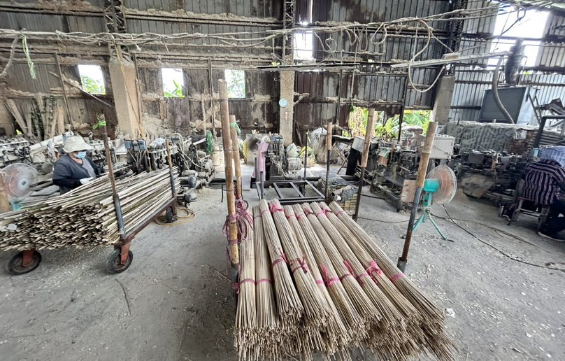

材料圖鑑
沒有符合的材料，可從客製找料提出需求。
材料形態圖為 AI 製作示意，供應規格依實際批次確認。各品項真實取樣狀態見卡片標示。
竹粉試單
2000 目竹粉 · 50 公斤
客戶需求已確認，試單尚未交付。
現場示範工單僅存於此瀏覽器。 正式洽詢收件（需同意留下聯絡資料）↗ ／ 查詢正式工單進度

沒有符合的材料，可從客製找料提出需求。
材料形態圖為 AI 製作示意，供應規格依實際批次確認。各品項真實取樣狀態見卡片標示。
現場示範工單僅存於此瀏覽器。 正式洽詢收件（需同意留下聯絡資料）↗ ／ 查詢正式工單進度